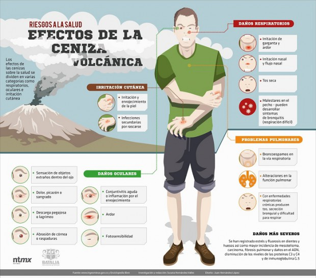

Volcan Popocatepetl
Tamaño, Antiguedad y Localización
Tamaño
El popocatepetl es el segundo volcán más alto de México, con una altitud máxima de 5500 metros sobre el nivel del mar.
Su altura es de 5500 msnm, es de forma cónica, tiene un diámetro de 25 km en su base y la cima es el corte elíptico de un cono y tiene una orientación noreste-suroeste. La distancia entre las paredes de su cráter varía entre los 660 y los 840 m.
Antiguedad
El Popocatépetl es un volcán geológicamente joven. Se cree que tiene unos 730,000 años de antigüedad y que es remanente de volcanes antiguos que colapsaron.
Localización
En el centro de México, en los límites territoriales de los estados de Morelos, Puebla y México. Se localiza a unos 72 km al sureste de la Ciudad de México, 43 km de Puebla, 63 km de Cuernavaca, y 53 km de Tlaxcala.
Actividad Volcanica
Alta actividad volcanica
El Popocatépetl es conocido por su alta actividad volcánica, que se presenta comúnmente. Desde que se reactivó, en 1997, hasta el momento, ha presentado una serie de erupciones de las cuales la más violenta ha sido la del año 2000, y la última la noche del 4 y madrugada del 5 de noviembre de 2014. El volcán es uno de los más monitoreados del mundo y también es uno de los más peligrosos y que amenaza más de 26 millones de personas

Medidas de prevención ante caida de ceniza
¿Qué hacer en caso de caida de ceniza?
- No humedecer la ceniza a fin de evitar taponamientos en el sistema de alcantarillado.
- Mantén la calma.
- No realices actividades al aire libre y si es posible no salgas.
- Si tienes que salir cúbrete con un pañuelo o tapabocas, limpia ojos y garganta con agua pura.
- Para los ojos, usa lentes protectores, especialmente si usas lentes de contacto
- Cubre tinacos, cisternas y depósitos de agua.
- Ante la caída de ceniza volcánica evita consumir alimentos en la vía pública.
- La ceniza puede ser usada para parques, jardines, macetas o tierras de cultivo, ya que es rica en minerales
- Usa las vías de comunicación solo en caso de ser necesario.

Medidas de prevención ante erupción
¿Qué hacer en caso de erupción volcánica?
- Mantén la calma.
- Con los miembros de la familia preparen el maletín para emergencias, con alimentos no perecederos, radio, foco, documentos personales, medicinas y protectores para cubrir la nariz.
- Ubiquen los albergues temporales, las rutas de evacuación y las zonas seguras en su comunidad.
- Respeten los sitios declarados peligrosos.
- Consulten a los Comités Municipales y Locales de Emergencias, sobre el sistema de evacuación y los centros de albergues para animales.
- Establezcan una ruta de evacuación, lejos de los ríos y quebradas y los posibles albergues.
- No se dejen llevar por falsos rumores de personas no autorizadas.

Estados Afectados
¿En caso de una erupción importante, cuál es el radio máximo de afectación?
Se limitarían a la cercanía del volcán, sobre radios del orden de 20 a 30 km. Un evento de esta naturaleza debería ser previsto por los sistemas de detección y monitoreo del volcán con anticipación suficiente para tomar medidas preventivas. En las grandes ciudades, como México, D.F., cuyo centro se encuentra a 72 km. del cráter del volcán, Puebla a unos 43 km., Cuernavaca a 63 km. o Tlaxcala a 53 km., los efectos de tal evento se limitarían a los problemas derivados de lluvias de cenizas volcánicas, similares a las del 30 de junio de 1997, pero más fuertes y con una proporción mayor de cenizas más gruesas.